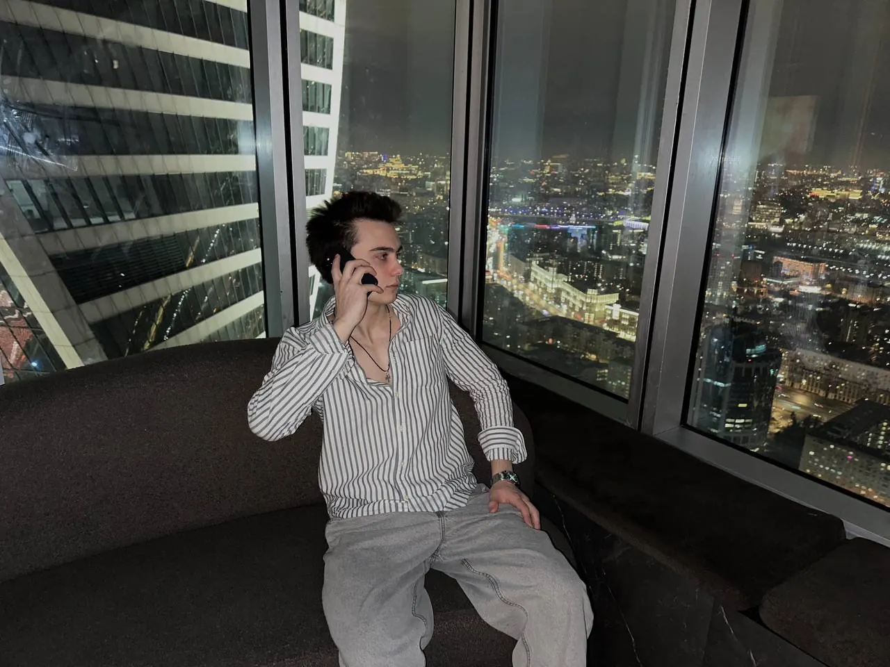
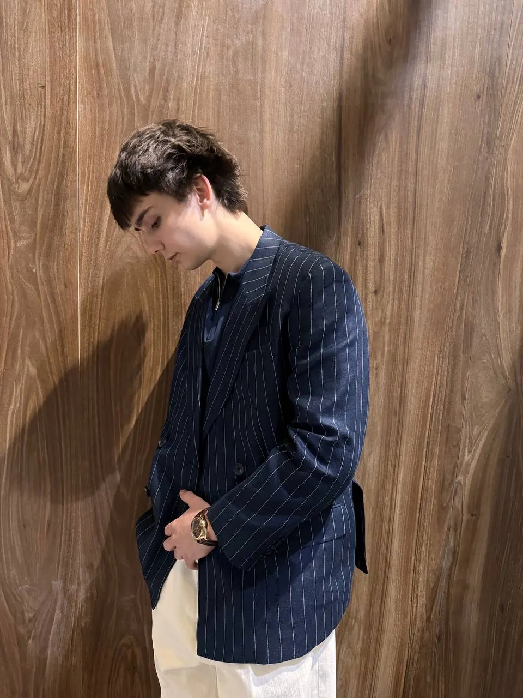
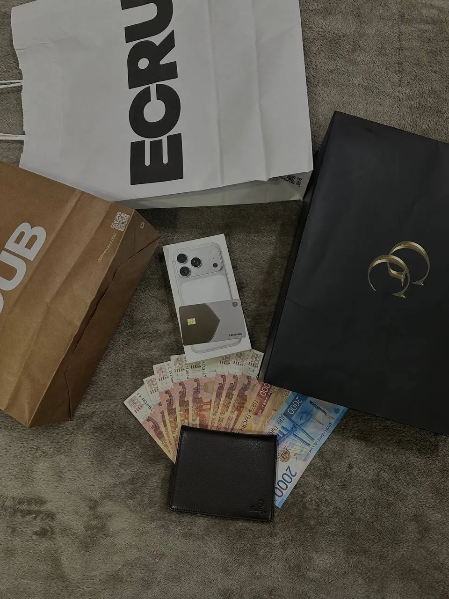
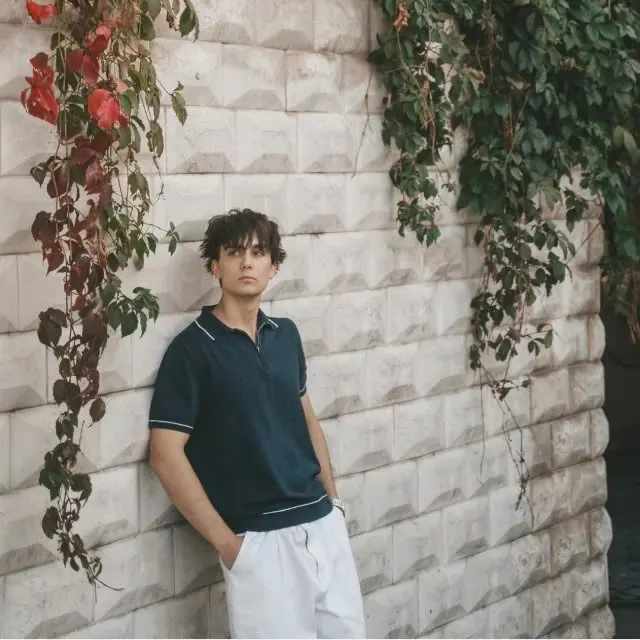
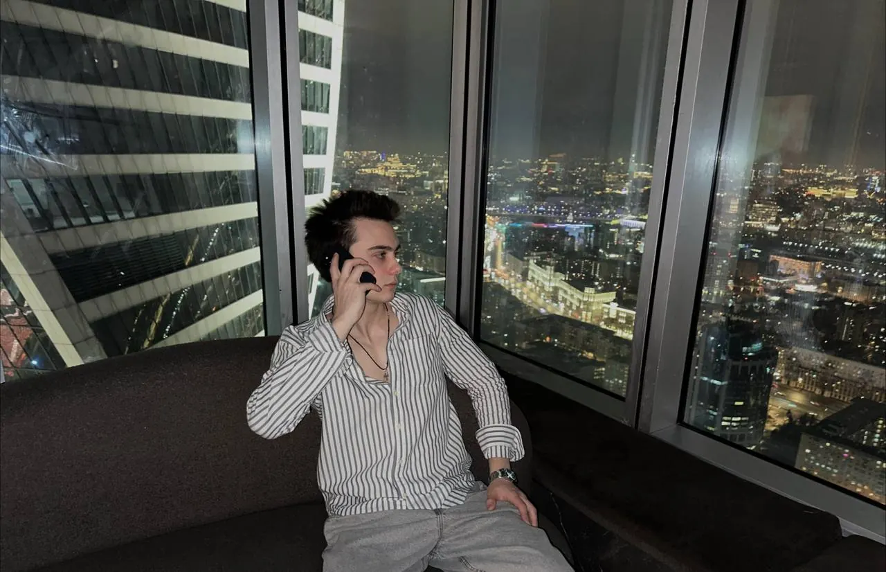
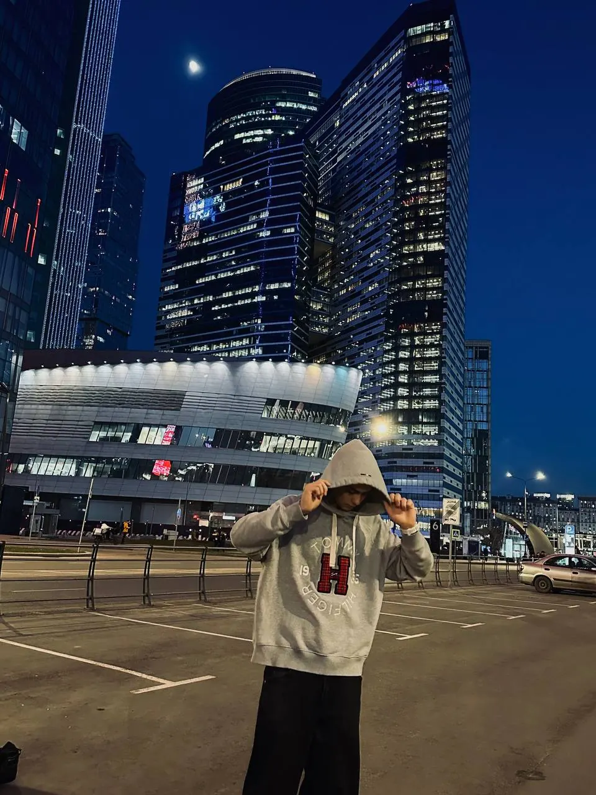
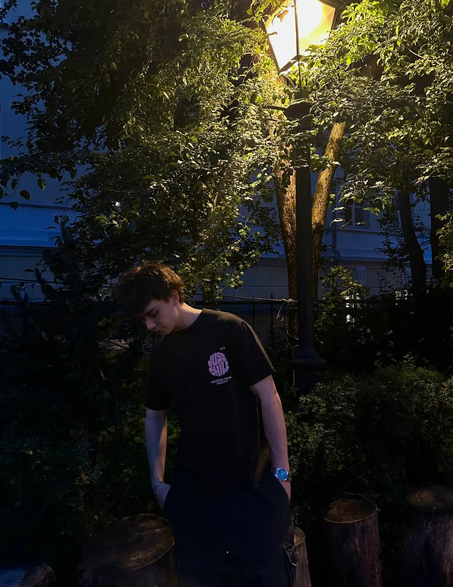
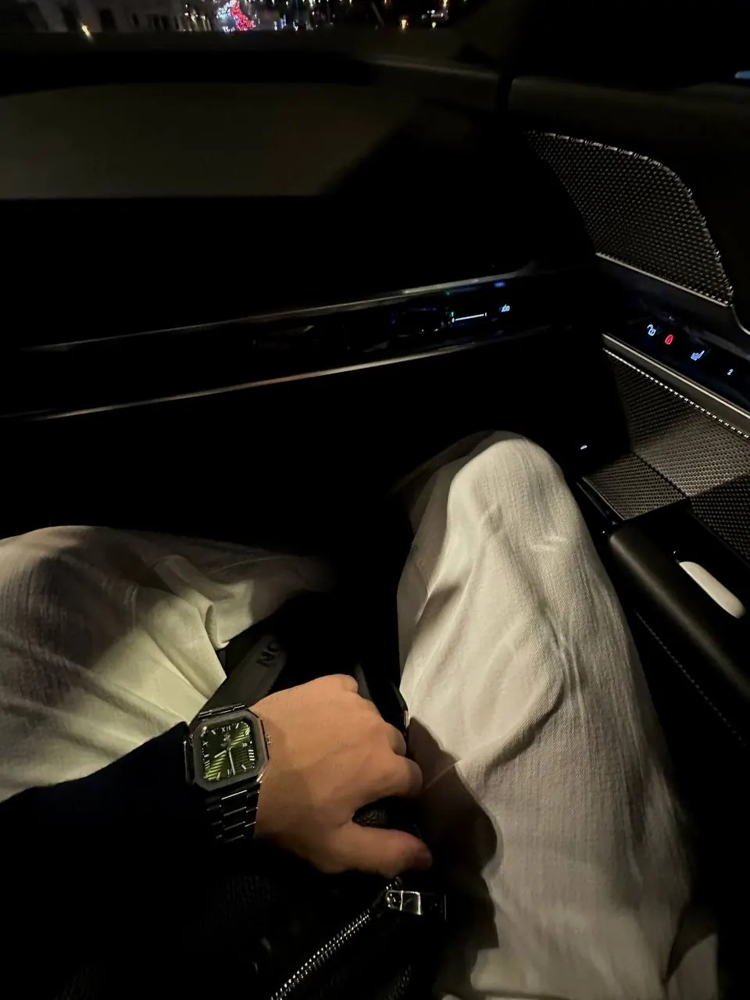
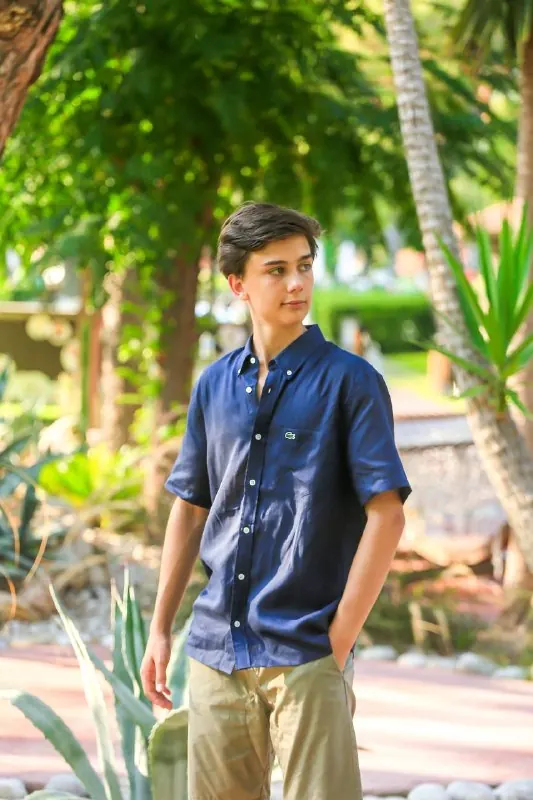
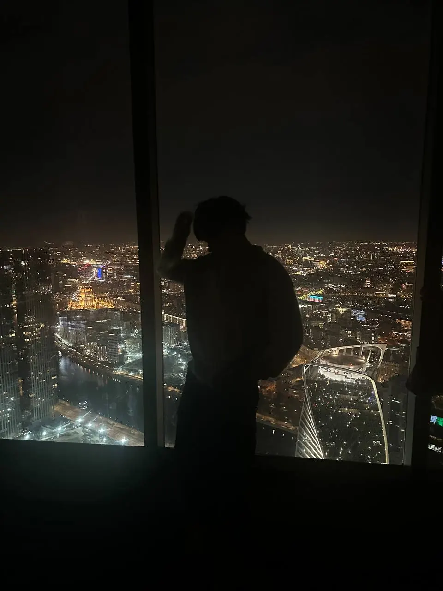

Привлечение клиентов

Люди приходят к вам уже заинтересованными в продукте. Не нужно самому искать клиентов и закрывать холодные заявки.
Увеличиваю прибыль бизнеса в несколько раз. Превращаю холодную аудиторию в покупателей, которые сами спрашивают: «Куда переводить деньги?»
Работаю с предпринимателями и экспертами, у которых есть продукт или услуга. Выстраиваю привлечение так, чтобы потенциальные клиенты сами проявляли интерес и приходили с желанием купить.
На выходе работы предприниматель получает горячих клиентов.








Изучаю материалы, нарабатываю компетенции и практикуюсь.
Начинаю продюсирование. Делаю первый миллион рублей. Открываю два бизнеса в digital.

Развиваю собственные проекты и работаю с большой командой.

Люди приходят к вам уже заинтересованными в продукте. Не нужно самому искать клиентов и закрывать холодные заявки.
Помогаю экспертам превращать свои социальные сети в источник клиентов и продаж.
Работаю с начинающими блогерами и с теми, кто уже пробовал продвигаться самостоятельно.
Учу продавать холодным клиентам на высокий чек и доводить диалог до покупки.
Подход
Не усложняй то, что можно построить просто.
Короткие заметки о digital, продюсировании, работе с проектами и ошибках, которые я делаю на ходу.